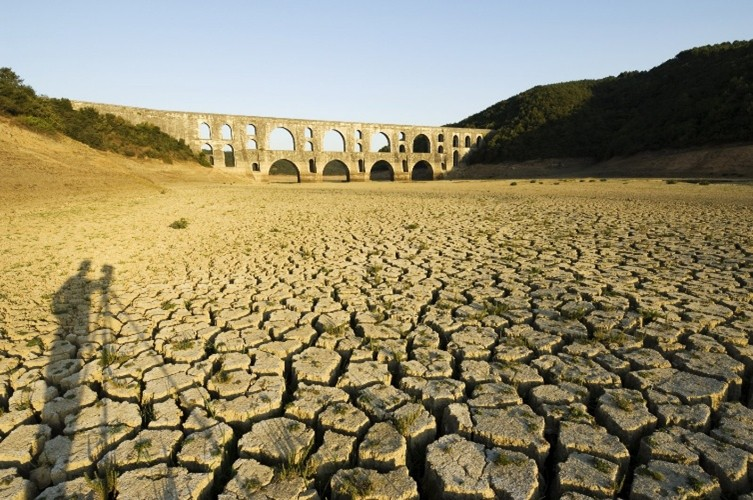
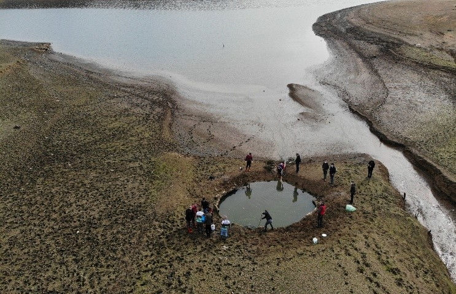

Turkey is experiencing an escalating water crisis driven by a mix of environmental, economic, and human pressures. This issue, once considered seasonal, now poses a long-term threat to communities, agriculture, and ecosystems across the country.
Communities gathering near a shrinking reservoir, highlighting the urgency of the crisis.
Climate Change & Drought: Turkey’s shifting climate patterns have led to hotter summers, decreased rainfall, and diminished snowpack in the mountains. These changes have reduced the replenishment of water reserves and triggered longer drought cycles.
Overuse in Agriculture: Nearly 3/4 of Turkey’s freshwater is used for agriculture—often through outdated and wasteful irrigation methods. This excessive use depletes groundwater faster than it can naturally recover.
Urbanization & Infrastructure Strain: Rapid population growth and poorly planned urban development have overwhelmed water infrastructure. Leaky pipelines, inefficient systems, and paved-over green spaces all contribute to the crisis.
Parched farmland reflects the combined effect of climate shifts and unsustainable farming practices.
Pollution & Mismanagement: Industrial discharge, untreated wastewater, and weak policy enforcement contaminate precious water sources. Fragmented water governance further delays coordinated solutions.
Lack of Public Awareness: Water conservation isn’t widely practiced. Many households and businesses are unaware of how simple changes—like fixing leaks or updating irrigation—could make a big difference.
Turkey's water future depends on innovation, cooperation, and a shift in everyday behavior. Solutions start with understanding the problem.